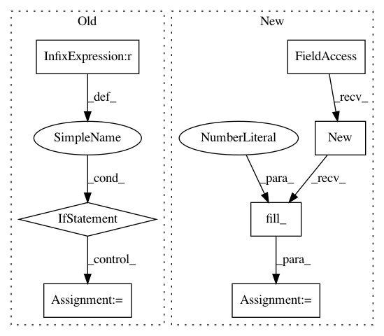

7e9154fdc79281420d027c7892c395946622ee40,gpytorch/lazy/toeplitz_lazy_variable.py,ToeplitzLazyVariable,__getitem__,#ToeplitzLazyVariable#Any#,237
Before Change
return ToeplitzLazyVariable(self.c, J_left_new, C_left_new,
J_right_new, C_right_new, diag_new)
else:
if i[0] != i[1]:
raise RuntimeError("Slicing an uninterpolated Toeplitz matrix to be non-square is probably \
unintended. If that was the intent, use evaluate() and slice the full matrix.")
c_new = reverse(reverse(self.c)[i[0]])
if self.added_diag is not None:
diag_new = reverse(reverse(self.added_diag)[i[0]])
else:
diag_new = None
After Change
// Pretend that the matrix is WTW, where W is an identity matrix, with appropriate slices
// J[i[0], :], C[i[0], :]
J_left_new = self.c.data.new(range(len(self.c))[i[0]]).unsqueeze(1)
C_left_new = self.c.data.new().resize_as_(J_left_new).fill_(1)
J_left_new = J_left_new.long()
// J[i[1], :] C[i[1], :]
J_right_new = self.c.data.new(range(len(self.c))[i[1]]).unsqueeze(1)
C_right_new = self.c.data.new().resize_as_(J_right_new).fill_(1)
In pattern: SUPERPATTERN
Frequency: 3
Non-data size: 7
Instances
Project Name: cornellius-gp/gpytorch
Commit Name: 7e9154fdc79281420d027c7892c395946622ee40
Time: 2017-08-25
Author: gpleiss@gmail.com
File Name: gpytorch/lazy/toeplitz_lazy_variable.py
Class Name: ToeplitzLazyVariable
Method Name: __getitem__
Project Name: ixaxaar/pytorch-dnc
Commit Name: 6e58890709c68a24c2773cb744804362aef4a23b
Time: 2017-11-12
Author: root@ixaxaar.in
File Name: dnc/memory.py
Class Name: Memory
Method Name: allocate
Project Name: ixaxaar/pytorch-dnc
Commit Name: 89c379db757a53851145180a3437b6b110334a7c
Time: 2017-11-12
Author: root@ixaxaar.in
File Name: dnc/memory.py
Class Name: Memory
Method Name: allocate